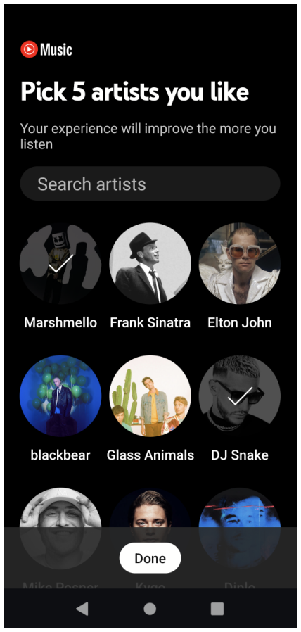

Minimizing Live Experiments in Recommender Systems: User Simulation to Evaluate Preference Elicitation Policies (最小化推荐系统中的在线实验：用用户模拟评估偏好引导策略)
- 会议/期刊: SIGIR 2024
- 作者与机构: Chih-Wei Hsu, Martin Mladenov, Ofer Meshi, Craig Boutilier 等，Google Research & YouTube
- 推荐链路定位: 冷启动偏好引导（召回前）
- 研究方向: 对话推荐与智能体仿真 / 冷启动与长尾推荐
- 论文原文: 论文原文链接
- 开源代码: 暂未开源
TL;DR (1分钟核心速览)
新用户 onboarding 的偏好引导（PE）策略通常依赖在线 A/B 实验评估，但 onboarding 仅发生一次，实验成本与留存风险极高。本文提出“用户状态生成器 + 用户会话生成器 + 生产级模拟器”三件套：用 LSTM 从日志中学习反事实鲁棒的用户行为，并让模拟用户走完整 YouTube Music 生产栈。在移动端流量切片上，20 万模拟用户预测新 pCTR 策略 selections +1.36%，与 50 万真实上线用户 +1.17% 同号且置信区间重叠，而 13.4 万真实 LE 给出 -0.76% 的误导性符号；模拟对三个 λ 策略的排序也与上线数据完全一致。
Background & Motivation (背景与核心矛盾)
- 主流范式: 新用户冷启动常通过 onboarding 阶段的显式偏好引导（如询问喜欢的艺人）快速构建用户画像；新 PE 策略上线前必须经过在线 A/B 实验验证。
- 前人局限: 在线实验周期长、样本需求大，且 onboarding 一次性体验失败后无法补救；传统离线模拟器多为 stylized 模型，只预测短期点击，不接入生产栈，难以评估 long-term 指标与全链路影响。
- 核心洞察 (Key Insight): 若用户模型在多个行为策略的数据上训练、具备一定反事实鲁棒性，并让模拟用户与真实生产基础设施交互，则模拟指标可逼近上线指标，且方差远小于小样本 LE。
- 本文切入点: 不做单一算法优化，而是搭建“可预测上线效果”的仿真评估方法论，把模拟从算法开发工具升级为 LE 的替代/筛选器。

Method (核心方法设计)
1. 整体框架 (Overall Architecture)
系统输入为 YouTube Music onboarding 会话日志与用户上线后前 \(W\)周消费记录。用户状态生成器从可观测上下文\(c_u\) 与隐式音乐兴趣序列中采样合成用户；用户会话生成器在每一轮根据静态状态与会话历史，决定“选择/跳过某艺人”及“是否终止”。两者通过模拟服务接入生产前端、后端、用户数据服务（UDSS）与数据叠加服务（DOS），输出 selections、impressions 等指标及候选策略排序，用于筛选进入 LE 的候选或直接支持上线决策。
flowchart TD
A["日志: OP会话 + 上线后消费"] --> B["用户状态生成器 (LSTM): 生成隐式兴趣序列"]
A --> C["用户会话生成器 (LSTM): 双头预测 select/continue"]
B --> D["模拟服务 Simulation Service"]
C --> D
D --> E["生产前端/后端/UDSS/DOS"]
E --> F["ΔSelections / ΔImpressions + 策略排序"]
F --> G["筛选候选进入 LE / 上线"]2. 关键设计拆解 (Key Designs)
- 变长兴趣序列生成器（User State Generator）：隐式兴趣的联合分布不可直接建模。本文把上线后 top-\(K\) 消费艺人当作“真实兴趣”监督，将联合分布因子分解为自回归形式：
$\(P(C_u)=P(c_u)\prod_{k=1}^{K}P(q_{uk}\mid c_u,q_{u1},\dots,q_{u,k-1})\)$
用 MLP 将 one-hot \(c_u\)编码为 LSTM 初始隐状态，艺术家嵌入\(\phi(q)\) 直接复用 PE 模块；下一艺人以 multinomial logit 采样，并引入 null artist 支持变长：
$\(P(q_{u,k+1}\mid o_{uk})=\frac{\exp(\phi(q_{u,k+1})^\top o_{uk})}{\sum_{q\in\mathcal{Q}\setminus\{q_{ui}\}_{i\le k}}\exp(\phi(q)^\top o_{uk})+\exp(\phi_\varnothing^\top o_{uk})}\)$
直觉：这样生成的兴趣“数量分布”和“组成”能与真实用户对齐（用 Wasserstein 距离与 precision/recall 校验）。
- 双头会话生成器（User Session Generator）：PE 会话既要预测选择，又要预测中途退出。LSTM 输入拼接 \(E(C_u)\)、当前艺人嵌入\(\phi(q_{ut})\)、响应嵌入\(\phi_r(r_{ut})\)、累计选择数\(y_t\)与轮次\(t\)，输出经两个 sigmoid 头并做终止门控：
$\(P(r_{ut}=1\mid\cdot)=\sigma(\mathrm{MLP}(o_{u,t-1},\bar{x}_{u,t-1}))\cdot s_{u,t-1}\)$
$\(P(s_{ut}=1\mid\cdot)=\sigma(\mathrm{MLP}(o_{u,t-1},\bar{x}_{u,t-1}))\cdot s_{u,t-1}\)$
把“已选数量”和“轮次”显式喂入，是复现真实 selection count 与 session length 分布的关键；终止后不再预测选择，避免逻辑矛盾。
- 生产级模拟器与数据隔离：模拟必须经过完整生产栈，又不能污染真实用户。前端服务与后端使用相同内容库和控制流；写路径由 DOS 将合成数据写入独立测试账户；读路径由 UDSS 识别模拟器请求后 overlay 模拟数据，上游服务零改动。该设计使模拟指标包含真实 UI、排序与下游推荐的全部细节。
训练目标、负采样与推理效率：状态生成器与会话生成器均用最大似然估计，\(\max_\theta\sum_{u\in\mathcal{U}}\log P(C_u;\theta)\)；艺人采样在候选集\(\mathcal{Q}\) 上做全 softmax（隐式负采样 + null artist），无额外负样本构造。推理为自回归逐艺人生成，单会话截断 300 轮；模拟 20 万用户可在离线服务中并行完成，成本远低于同等样本量的 LE。
Experimental Setup & Evaluation Protocol (实验设置与评估协议)
- 数据集与实验规模: 工业 YouTube Music onboarding 日志，仅移动端。无公开数据集统计，核心规模如下：
| 阶段 | 用户规模 | 用途 |
|---|---|---|
| 模型训练 | 未披露（OP 日志 + 首 \(W\) 周消费） | 训练状态/会话生成器 |
| 离线模拟 | 200,000 synthetic | 预测新 pCTR 策略 |
| Live Experiment | ~134,000 real | 对照评估 |
| Post-launch | 500,000 real | 真实上线指标 |
- 数据划分与防穿越: 采用 pre-post 分析，假设指标与用户行为在观察窗口内稳定；训练数据来自已部署行为策略，测试策略为未见过的 pCTR 策略或不同 \(\lambda\) 的 PE 策略。
- 排名/评估协议: 不采用传统 Top-N 排序指标，而是评估指标相对变化 \(\Delta\%\) 及 95% 置信区间、会话长度/选择数的 CDF 匹配、兴趣生成的 Wasserstein 距离与 precision/recall、选择预测 AUCLoss，以及策略排序一致性。
- 对比基线与超参: 基线为 incumbent production policy（\(\lambda=0.1\)）与 original pCTR policy；新策略包括三个 pCTR 候选与九个\(\lambda\in\{0.001,\dots,10\}\) 的 pCTR-coverage 折中策略。无显著性检验，以 95% CI 重叠作为主要判断依据。
Key Experimental Results (实验关键数据)
1. 主实验对比 (Main Results)
新 pCTR 策略相对 incumbent 的指标变化（95% CI）：
| 评估方式 | 用户数 | Selections Δ% | Impressions Δ% |
|---|---|---|---|
| Live Experiment | ~134,000 | -0.76 [-5.05, 3.04] | -1.25 [-3.57, 1.07] |
| Simulation | 200,000 | +1.36 [-0.11, 2.83] | -1.02 [-1.74, -0.31] |
| Post-launch | 500,000 | +1.17 [-0.03, 2.36] | -0.78 [-1.15, -0.41] |
策略排序对比（\(\lambda\) 对 selections 的影响，95% CI）：
| 评估 | \(\lambda=0.001\) | \(\lambda=0.05\) | \(\lambda=0.2\) | 排序 |
|---|---|---|---|---|
| LE 1 | +0.71±3.35 | +1.60±1.91 | +1.17±3.81 | 0.05>0.2>0.001 |
| LE 2 | +1.62±3.40 | +0.54±2.96 | +0.52±3.38 | 0.001>0.05>0.2 |
| LE 3 | -2.11±2.50 | +0.07±3.02 | +0.61±3.36 | 0.2>0.05>0.001 |
| Launch | -0.12±1.88 | +0.75±1.22 | +0.79±1.98 | 0.2>0.05>0.001 |
| Simulation | +0.07±3.42 | +0.84±3.16 | +2.35±3.32 | 0.2>0.05>0.001 |
2. 消融/敏感性实验 (Ablation & Sensitivity)
| 变体/组件 | 关键结果 | 结论 |
|---|---|---|
| RNN (LSTM) vs. Transformer | 生成质量相近 | 选 LSTM 为主，Transformer 无显著增益 |
| 状态生成器 w/o null artist | 无法匹配兴趣数量分布 | 变长机制必要 |
| 会话生成器 w/o \(y_t,t\) 输入 | 选择数/会话长度分布偏移 | 计数与轮次特征是关键 |
| \(\lambda=0.001/0.01/0.05/0.2/1/10\) | selections 增益 0.07/0.20/0.84/2.35/-0.48/0.24% | \(\lambda=0.2\) 最优，过大 coverage 反而伤害选择 |
3. 关键实验发现 (Key Findings)
- 模拟显著降低评估方差：LE 仅 13.4 万用户，selections CI 宽度约 8.1%，给出 -0.76% 的错误符号；模拟 20 万用户 CI 宽度仅 2.94%，预测 +1.36%，与上线后 50 万用户 +1.17% 同号且区间重叠。
- 大规模 in-silico 排序比小样本 LE 更可靠：三个小 LE 对 \(\lambda\) 策略的排序互不一致，且均与 launch 排序不符；模拟排序 0.2>0.05>0.001 与 launch 完全一致，说明模拟可用于策略筛选与排序。
- 反事实鲁棒性在相近策略上成立：选择预测 AUCLoss 在训练数据为 0.763、上线后日志为 0.760，几乎无衰减；离线模拟选出的最佳 pCTR 候选上线后取得 +2.06% [0.20%, 3.92%] 的 CTR 增益，验证了“模拟筛选→LE 确认→上线”的闭环有效性。
Highlights & Limitations (亮点、对比与审稿批判)
- 与代表作对比: 相比 RecSim NG 等仅用于算法开发的模拟平台，本文将模拟器接入完整生产栈并用多策略数据训练；相比 Meta WW 等社交模拟工作，本文进一步用模拟直接预测上线指标并做策略排序，而不仅是分析用户动态。
- 可迁移亮点: (1) 用上线后长期消费反推 onboarding 阶段的“真实兴趣”，为隐式状态生成提供监督；(2) 通过 UDSS/DOS 在读路径 overlay 模拟数据，实现模拟与真实用户数据隔离且不修改上游服务，适合工业级仿真部署。
- 审稿级局限批判: (1) 会话生成依赖线性化 UI 假设，仅验证移动端，桌面端多艺人同屏场景可能失效；(2) 反事实鲁棒性无统计保证，当新策略与训练行为策略差异过大时模拟可能系统性偏差，且 impressions 排序在 Table 4 中模拟与 launch 并不一致，说明多指标排序仍不稳定。
Rating (四维评分)
- 方法创新性 (Novelty): ⭐⭐⭐⭐ （将用户模拟从算法开发工具推进为 LE 替代方案，生产栈耦合与反事实鲁棒性验证有较强系统创新）
- 评估协议与实验扎实度 (Protocol & Experiments): ⭐⭐⭐⭐ （同时对比 LE、模拟与上线后真实指标，策略排序实验设计巧妙；但缺少多场景、多产品验证与正式显著性检验）
- 写作与数学规范度 (Clarity & Rigor): ⭐⭐⭐⭐ （生成模型公式清晰、假设明确；部分工业细节与数据统计披露有限）
- 工业落地与复现价值 (Industrial & Practical Value): ⭐⭐⭐⭐⭐ （直接面向 YouTube Music 生产环境，数据隔离与模拟服务架构对工业界极具参考价值；但代码未开源，复现门槛高）